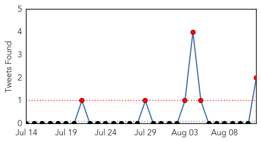
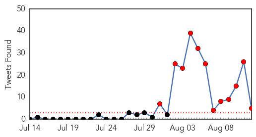
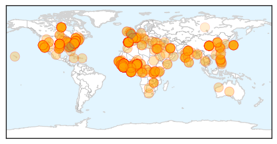

Cholera
30-Day Web Trend
5 alerts, 2 warnings

30-Day Twitter Trend
4 alerts, 0 warnings

Article Locations

Article Confidences
Top Articles:
- 0.955
- More than 3,000 cholera cases recorded in Accra alone since July
- 0.942
- Ghana, Business Advice, Jobs, News, Business Directory, Real Estate, Finance, Forms, Auto
- 0.906
- Cholera epidemic in Cameroon
- 0.863
- Red Cross revises its emergency appeal to assist 450,000 affected by conflict in South Sudan - South Sudan
- 0.739
- Ghaianas Asked To Take Advantage Of Medical Call Centre
Top Tweets:
- 0.864
- Fantastic piece by, on how another novel disease outbreak--cholera in Haiti--spiralled out of control http://t.co/NrRX6XCiqV
- 0.771
- Lessons for Ebola? Cholera in Haiti not controlled despite plenty of NGOs + availability of cheap easy treatment. http://t.co/NrRX6XCiqV
Ebola
30-Day Web Trend
20 alerts, 0 warnings
30-Day Twitter Trend
16 alerts, 0 warnings

Article Locations
Article Confidences
Top Articles:
- 1.000
- East African nations on high alert for Ebola
- 1.000
- Senegal quarantines first suspected Ebola virus case
- 1.000
- Ebola Update: Spanish Priest Dies; WHO Gives OK To Experimental Drugs
- 1.000
- As Ebola toll tops 1,000, WHO official says she hopes more medicine will be available by the end of 2014
- 1.000
- Ebola death toll tops 1,000 in West Africa; WHO says use of test treatments is ethical
- 1.000
- Why most of the people Ebola kills may never actually contract it
- 1.000
- Cameroon Fears Ebola Spread from Nigeria
- 1.000
- Ebola victim Miguel Pajares given trial ZMapp drug dies
- 1.000
- Prvi interaktivni multimedijski portal, MMC RTV Slovenija
- 1.000
- Nurse Is Nigeria's 10th Case of Ebola
- 1.000
- Rwanda patient tests negative for Ebola
- 1.000
- Ebola victim given trial drug dies
- 1.000
- Plan International outlines strategies to combat Ebola outbreak
- 1.000
- Ebola update: Spanish priest dies; WHO gives OK to experimental drugs
- 1.000
- LET US BE SENSIBLE ABOUT EBOLA
- 1.000
- Joining the battle against Ebola
- 1.000
- Chinese medics quarantined in Sierra Leone - Africa
- 1.000
- Ebola outbreak: What is ZMapp and could the experimental treatment stop the disease?
- 1.000
- Ebola outbreak: Liberia sent untested ZMapp treatment as death toll passes 1,000
- 1.000
- Liberian doctors to get experimental Ebola drug
- 1.000
- Ebola – Asian nations screening travellers
- 1.000
- Nurse is Nigeria's 10th Case of Ebola
- 1.000
- Doctors to Congress: Ebola will likely rage for a year or more
- 1.000
- Ghana, Niger, Mali borders prone to Ebola spread
- 1.000
- Eight Chinese medics quarantined as panic grips Ebola-hit west Africa
- 1.000
- The Kathmandu Post
- 1.000
- Ebola panic - Headlines, features, photo and videos from ecns.cn
- 1.000
- As Ebola death toll tops 1,000, Turkey takes precautionary measures
- 1.000
- UN: OK to use untested Ebola drugs in outbreak
- 1.000
- UN: OK to use untested Ebola drugs in outbreak
- 1.000
- Ethical questions emerge over who gets Ebola drug
- 1.000
- The most from the coast
- 1.000
- The most from the coast
- 1.000
- Experimental Ebola drug on its way to Liberia
- 1.000
- Ebola experimental drugs and vaccines
- 1.000
- Liberia to receive Zmapp drug to treat Ebola virus
- 1.000
- Ebola response up but huge gaps remain
- 1.000
- Experimental Ebola drug sent to Africa
- 1.000
- Rumor and Confusion Make It Harder To Stop The Outbreak
- 1.000
- Canada will donate up to 1,000 experimental Ebola vaccine doses to WHO — RT News
- 1.000
- 8 Chinese quarantined as panic grips Ebola-hit west Africa
- 1.000
- WHO approves experimental drugs as Ebola death toll tops 1,000 - Spanish priest dies of Ebola - Kuwait Times
- 1.000
- WHO approves experimental Ebola drugs (Update 2)
- 1.000
- Are We Ready To Fight Ebola?
- 1.000
- US to supply Liberia with samples of experimental Ebola vaccine
- 1.000
- The Chosun Ilbo (English Edition): Daily News from Korea
- 1.000
- US to supply Liberia with samples of experimental Ebola vaccine
- 1.000
- Death toll from Ebola virus disease exceeds 1,000 in West Africa
- 1.000
- Ebola virus: 9 things to know about the killer disease
- 1.000
- Ethics test Who gets experimental Ebola drug
Showing top 50 articles...
Top Tweets:
- 0.919
- KSA MOH: The suspected Ebola case tested negative for Ebola virus, a lab in Germany confirms CDC results. http://t.co/6Rz855EpvL
- 0.900
- Meet Meredith, a CDC DiseaseDetective who served in West Africa fighting the Ebola outbreak. Read her story: http://t.co/R5lphyBC8k
- 0.878
- RT: Meet Meredith, a CDC DiseaseDetective who served in West Africa fighting the Ebola outbreak. Read her story: http://t.co/R5lp…
- 0.840
- RT: WHO Ebola ethic panel: It is ethical to offer unproven Ebola interventions as potential treatment or prevention alert
- 0.800
- RT: Families wiped out by Ebola: At Heart of Ebola Outbreak, a Village Frozen by Fear and Death http://t.co/p8PvLrilZ6
- 0.719
- RT: Saudis are reminded that MOH advises against visiting SierraLeone , Guinea & Liberia due to Ebola
- 0.627
- Should experimental drugs be used in the Ebola outbreak? http://t.co/F68uhQ12RC
- 0.541
- Over the past decade, research efforts have been invested into developing drugs and vaccines for Ebola virus... http://t.co/J1v0FtC4Rs